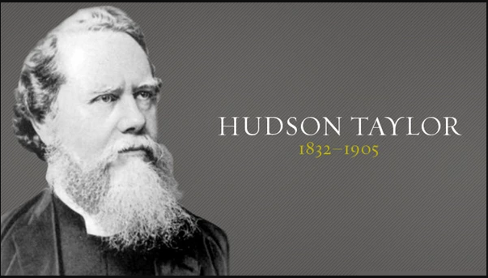

James Hudson Taylor, nascido em 21 de maio de 1832 em Barnsley, Yorkshire, Inglaterra (faleceu em 3 de junho de 1905, aos 73 anos em Changsha, Hunan, China), foi um missionário Cristão na China, e fundador do China Inland Mission (CIM – agora OMF International).
Taylor viveu na China por 51 anos. A sociedade que ele iniciou foi responsável pelo envio de mais de 800 missionários ao país que começaram 125 escolas e diretamente resultou na conversão Cristã de 18.000 pessoas, também como no estabelecimento de mais de 300 estações de trabalho com mais de 500 colaboradores locais em todas as dezoito províncias.
